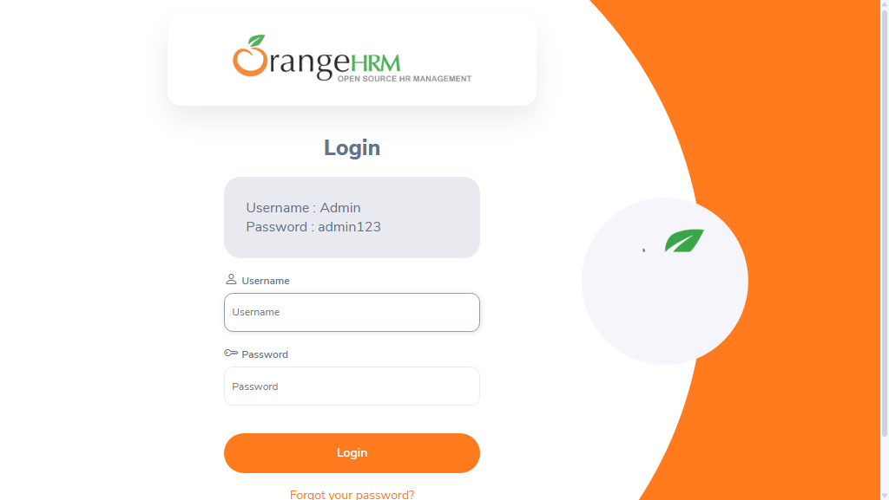

-
sampleTest_user1_20-18-45
8:18:45 PM / 00:00:13:106 Fail
sampleTest_user1_20-18-45
09.12.2026 8:18:45 PM 09.12.2026 8:18:58 PM 00:00:13:106 · #test-id=3Status Timestamp Details Skip 8:18:58 PM Test Skipped Fail 8:18:58 PM Info 8:18:58 PM 📂 Logs: Info 8:18:58 PM 📄 sampleTest_user1_20-18-45.log -
sampleTest1_user1_20-18-44
8:18:45 PM / 00:00:13:361 Fail
sampleTest1_user1_20-18-44
09.12.2026 8:18:45 PM 09.12.2026 8:18:58 PM 00:00:13:361 · #test-id=1Status Timestamp Details Skip 8:18:58 PM Test Skipped Fail 8:18:58 PM Info 8:18:58 PM 📂 Logs: Info 8:18:58 PM 📄 sampleTest1_user1_20-18-44.log -
sampleTest2_user1_20-18-44
8:18:45 PM / 00:00:12:963 Fail
sampleTest2_user1_20-18-44
09.12.2026 8:18:45 PM 09.12.2026 8:18:58 PM 00:00:12:963 · #test-id=2Status Timestamp Details Skip 8:18:58 PM Test Skipped Fail 8:18:58 PM -
sampleTest3_user1_20-18-44
8:18:45 PM / 00:00:13:351 Fail
sampleTest3_user1_20-18-44
09.12.2026 8:18:45 PM 09.12.2026 8:18:58 PM 00:00:13:351 · #test-id=4Status Timestamp Details Skip 8:18:58 PM Test Skipped Fail 8:18:58 PM -
sampleTest2_user1_20-19-02
8:19:02 PM / 00:00:18:057 Fail
sampleTest2_user1_20-19-02
09.12.2026 8:19:02 PM 09.12.2026 8:19:20 PM 00:00:18:057 · #test-id=6Status Timestamp Details Skip 8:19:20 PM Test Skipped Fail 8:19:20 PM -
sampleTest1_user1_20-19-02
8:19:02 PM / 00:00:17:488 Fail
sampleTest1_user1_20-19-02
09.12.2026 8:19:02 PM 09.12.2026 8:19:20 PM 00:00:17:488 · #test-id=5Status Timestamp Details Skip 8:19:20 PM Test Skipped Fail 8:19:20 PM Info 8:19:20 PM 📂 Logs: Info 8:19:20 PM 📄 sampleTest1_user1_20-19-02.log -
sampleTest3_user1_20-19-02
8:19:02 PM / 00:00:18:273 Fail
sampleTest3_user1_20-19-02
09.12.2026 8:19:02 PM 09.12.2026 8:19:21 PM 00:00:18:273 · #test-id=7Status Timestamp Details Skip 8:19:21 PM Test Skipped Fail 8:19:21 PM -
sampleTest_user1_20-19-02
8:19:02 PM / 00:00:17:068 Fail
sampleTest_user1_20-19-02
09.12.2026 8:19:02 PM 09.12.2026 8:19:20 PM 00:00:17:068 · #test-id=8Status Timestamp Details Skip 8:19:20 PM Test Skipped Fail 8:19:20 PM Info 8:19:20 PM 📂 Logs: Info 8:19:20 PM 📄 sampleTest_user1_20-19-02.log -
sampleTest1_user1_20-19-22
8:19:22 PM / 00:00:19:730 Fail
sampleTest1_user1_20-19-22
09.12.2026 8:19:22 PM 09.12.2026 8:19:41 PM 00:00:19:730 · #test-id=9Status Timestamp Details Fail 8:19:41 PM Info 8:19:41 PM 📂 Logs: Info 8:19:41 PM 📄 sampleTest1_user1_20-19-22.log -
sampleTest_user1_20-19-22
8:19:22 PM / 00:00:19:720 Fail
sampleTest_user1_20-19-22
09.12.2026 8:19:22 PM 09.12.2026 8:19:41 PM 00:00:19:720 · #test-id=10Status Timestamp Details Fail 8:19:41 PM Info 8:19:41 PM 📂 Logs: Info 8:19:41 PM 📄 sampleTest_user1_20-19-22.log -
sampleTest3_user1_20-19-25
8:19:25 PM / 00:00:16:137 Fail
sampleTest3_user1_20-19-25
09.12.2026 8:19:25 PM 09.12.2026 8:19:42 PM 00:00:16:137 · #test-id=11Status Timestamp Details Fail 8:19:42 PM -
sampleTest2_user1_20-19-26
8:19:26 PM / 00:00:15:427 Fail
sampleTest2_user1_20-19-26
09.12.2026 8:19:26 PM 09.12.2026 8:19:41 PM 00:00:15:427 · #test-id=12Status Timestamp Details Fail 8:19:41 PM -
sampleTest_user2_20-19-44
8:19:44 PM / 00:00:20:262 Fail
sampleTest_user2_20-19-44
09.12.2026 8:19:44 PM 09.12.2026 8:20:04 PM 00:00:20:262 · #test-id=13Status Timestamp Details Skip 8:20:04 PM Test Skipped Fail 8:20:04 PM Info 8:20:04 PM 📂 Logs: Info 8:20:04 PM 📄 sampleTest_user2_20-19-44.log -
sampleTest1_user2_20-19-44
8:19:44 PM / 00:00:20:036 Fail
sampleTest1_user2_20-19-44
09.12.2026 8:19:44 PM 09.12.2026 8:20:04 PM 00:00:20:036 · #test-id=14Status Timestamp Details Skip 8:20:04 PM Test Skipped Fail 8:20:04 PM Info 8:20:04 PM 📂 Logs: Info 8:20:04 PM 📄 sampleTest1_user2_20-19-44.log -
sampleTest2_user2_20-19-45
8:19:45 PM / 00:00:18:831 Fail
sampleTest2_user2_20-19-45
09.12.2026 8:19:45 PM 09.12.2026 8:20:04 PM 00:00:18:831 · #test-id=15Status Timestamp Details Skip 8:20:04 PM Test Skipped Fail 8:20:04 PM -
sampleTest3_user2_20-19-48
8:19:48 PM / 00:00:16:471 Fail
sampleTest3_user2_20-19-48
09.12.2026 8:19:48 PM 09.12.2026 8:20:04 PM 00:00:16:471 · #test-id=16Status Timestamp Details Skip 8:20:04 PM Test Skipped Fail 8:20:04 PM -
sampleTest2_user2_20-20-06
8:20:06 PM / 00:00:19:404 Fail
sampleTest2_user2_20-20-06
09.12.2026 8:20:06 PM 09.12.2026 8:20:25 PM 00:00:19:404 · #test-id=17Status Timestamp Details Skip 8:20:25 PM Test Skipped Fail 8:20:25 PM -
sampleTest1_user2_20-20-07
8:20:07 PM / 00:00:18:210 Fail
sampleTest1_user2_20-20-07
09.12.2026 8:20:07 PM 09.12.2026 8:20:25 PM 00:00:18:210 · #test-id=18Status Timestamp Details Skip 8:20:25 PM Test Skipped Fail 8:20:25 PM Info 8:20:25 PM 📂 Logs: Info 8:20:25 PM 📄 sampleTest1_user2_20-20-07.log -
sampleTest_user2_20-20-07
8:20:07 PM / 00:00:18:013 Fail
sampleTest_user2_20-20-07
09.12.2026 8:20:07 PM 09.12.2026 8:20:25 PM 00:00:18:013 · #test-id=19Status Timestamp Details Skip 8:20:25 PM Test Skipped Fail 8:20:25 PM Info 8:20:25 PM 📂 Logs: Info 8:20:25 PM 📄 sampleTest_user2_20-20-07.log -
sampleTest3_user2_20-20-08
8:20:08 PM / 00:00:17:249 Fail
sampleTest3_user2_20-20-08
09.12.2026 8:20:08 PM 09.12.2026 8:20:25 PM 00:00:17:249 · #test-id=20Status Timestamp Details Skip 8:20:25 PM Test Skipped Fail 8:20:25 PM -
sampleTest2_user2_20-20-26
8:20:26 PM / 00:00:19:758 Fail
sampleTest2_user2_20-20-26
09.12.2026 8:20:26 PM 09.12.2026 8:20:46 PM 00:00:19:758 · #test-id=21Status Timestamp Details Fail 8:20:46 PM -
sampleTest3_user2_20-20-30
8:20:30 PM / 00:00:15:965 Fail
sampleTest3_user2_20-20-30
09.12.2026 8:20:30 PM 09.12.2026 8:20:46 PM 00:00:15:965 · #test-id=22Status Timestamp Details Fail 8:20:46 PM -
sampleTest_user2_20-20-30
8:20:30 PM / 00:00:16:013 Fail
sampleTest_user2_20-20-30
09.12.2026 8:20:30 PM 09.12.2026 8:20:46 PM 00:00:16:013 · #test-id=23Status Timestamp Details Fail 8:20:46 PM Info 8:20:46 PM 📂 Logs: Info 8:20:46 PM 📄 sampleTest_user2_20-20-30.log -
sampleTest1_user2_20-20-30
8:20:30 PM / 00:00:15:435 Fail
sampleTest1_user2_20-20-30
09.12.2026 8:20:30 PM 09.12.2026 8:20:46 PM 00:00:15:435 · #test-id=24Status Timestamp Details Fail 8:20:46 PM Info 8:20:46 PM 📂 Logs: Info 8:20:46 PM 📄 sampleTest1_user2_20-20-30.log -
sampleTest5_user1_20-20-48
8:20:48 PM / 00:00:19:163 Fail
sampleTest5_user1_20-20-48
09.12.2026 8:20:48 PM 09.12.2026 8:21:08 PM 00:00:19:163 · #test-id=25Status Timestamp Details Skip 8:21:08 PM Test Skipped Fail 8:21:08 PM -
sampleTest4_user1_20-20-49
8:20:49 PM / 00:00:18:854 Fail
sampleTest4_user1_20-20-49
09.12.2026 8:20:49 PM 09.12.2026 8:21:07 PM 00:00:18:854 · #test-id=26Status Timestamp Details Skip 8:21:07 PM Test Skipped Fail 8:21:07 PM -
verifyLoginTest1_user1_20-20-51
8:20:51 PM / 00:00:16:546 Fail
verifyLoginTest1_user1_20-20-51
09.12.2026 8:20:51 PM 09.12.2026 8:21:07 PM 00:00:16:546 · #test-id=27Status Timestamp Details Skip 8:21:07 PM Test Skipped Fail 8:21:07 PM Info 8:21:07 PM 📸 Screenshots: Info 8:21:07 PM 
-
verifyLoginTest_{COL1=ONE}_20-20-53
8:20:53 PM / 00:00:14:425 Fail
verifyLoginTest_{COL1=ONE}_20-20-53
09.12.2026 8:20:53 PM 09.12.2026 8:21:08 PM 00:00:14:425 · #test-id=28Status Timestamp Details Skip 8:21:08 PM Test Skipped Fail 8:21:08 PM Info 8:21:08 PM 📂 Logs: Info 8:21:08 PM 📄 verifyLoginTest_{COL1=ONE}_20-20-53.log Info 8:21:08 PM 📸 Screenshots: Info 8:21:08 PM 
-
sampleTest4_user1_20-21-11
8:21:11 PM / 00:00:17:360 Fail
sampleTest4_user1_20-21-11
09.12.2026 8:21:11 PM 09.12.2026 8:21:28 PM 00:00:17:360 · #test-id=29Status Timestamp Details Skip 8:21:28 PM Test Skipped Fail 8:21:28 PM -
sampleTest5_user1_20-21-11
8:21:11 PM / 00:00:17:327 Fail
sampleTest5_user1_20-21-11
09.12.2026 8:21:11 PM 09.12.2026 8:21:28 PM 00:00:17:327 · #test-id=30Status Timestamp Details Skip 8:21:28 PM Test Skipped Fail 8:21:28 PM -
verifyLoginTest_{COL1=ONE}_20-21-12
8:21:12 PM / 00:00:15:417 Fail
verifyLoginTest_{COL1=ONE}_20-21-12
09.12.2026 8:21:12 PM 09.12.2026 8:21:28 PM 00:00:15:417 · #test-id=31Status Timestamp Details Skip 8:21:28 PM Test Skipped Fail 8:21:28 PM Info 8:21:28 PM 📂 Logs: Info 8:21:28 PM 📄 verifyLoginTest_{COL1=ONE}_20-21-12.log Info 8:21:28 PM 📸 Screenshots: Info 8:21:28 PM 
-
verifyLoginTest1_user1_20-21-14
8:21:14 PM / 00:00:15:382 Fail
verifyLoginTest1_user1_20-21-14
09.12.2026 8:21:14 PM 09.12.2026 8:21:29 PM 00:00:15:382 · #test-id=32Status Timestamp Details Skip 8:21:29 PM Test Skipped Fail 8:21:29 PM Info 8:21:29 PM 📸 Screenshots: Info 8:21:29 PM -
sampleTest5_user1_20-21-30
8:21:30 PM / 00:00:19:742 Fail
sampleTest5_user1_20-21-30
09.12.2026 8:21:30 PM 09.12.2026 8:21:49 PM 00:00:19:742 · #test-id=33Status Timestamp Details Fail 8:21:49 PM -
sampleTest4_user1_20-21-30
8:21:30 PM / 00:00:19:029 Fail
sampleTest4_user1_20-21-30
09.12.2026 8:21:30 PM 09.12.2026 8:21:49 PM 00:00:19:029 · #test-id=34Status Timestamp Details Fail 8:21:49 PM -
verifyLoginTest_{COL1=ONE}_20-21-31
8:21:31 PM / 00:00:16:683 Fail
verifyLoginTest_{COL1=ONE}_20-21-31
09.12.2026 8:21:31 PM 09.12.2026 8:21:47 PM 00:00:16:683 · #test-id=35Status Timestamp Details Fail 8:21:47 PM Info 8:21:47 PM 📂 Logs: Info 8:21:47 PM 📄 verifyLoginTest_{COL1=ONE}_20-21-31.log Info 8:21:47 PM 📸 Screenshots: Info 8:21:47 PM 
-
verifyLoginTest1_user1_20-21-35
8:21:35 PM / 00:00:15:968 Fail
verifyLoginTest1_user1_20-21-35
09.12.2026 8:21:35 PM 09.12.2026 8:21:51 PM 00:00:15:968 · #test-id=36Status Timestamp Details Fail 8:21:51 PM Info 8:21:51 PM 📸 Screenshots: Info 8:21:51 PM 
-
verifyLoginTest_{COL1=ONEONE}_20-21-49
8:21:49 PM / 00:00:13:475 Fail
verifyLoginTest_{COL1=ONEONE}_20-21-49
09.12.2026 8:21:49 PM 09.12.2026 8:22:02 PM 00:00:13:475 · #test-id=37Status Timestamp Details Skip 8:22:02 PM Test Skipped Fail 8:22:02 PM Info 8:22:02 PM 📂 Logs: Info 8:22:02 PM 📄 verifyLoginTest_{COL1=ONEONE}_20-21-49.log Info 8:22:02 PM 📸 Screenshots: Info 8:22:02 PM 
-
sampleTest4_user2_20-21-51
8:21:51 PM / 00:00:18:118 Fail
sampleTest4_user2_20-21-51
09.12.2026 8:21:51 PM 09.12.2026 8:22:09 PM 00:00:18:118 · #test-id=38Status Timestamp Details Skip 8:22:09 PM Test Skipped Fail 8:22:09 PM -
sampleTest5_user2_20-21-52
8:21:52 PM / 00:00:16:662 Fail
sampleTest5_user2_20-21-52
09.12.2026 8:21:52 PM 09.12.2026 8:22:09 PM 00:00:16:662 · #test-id=39Status Timestamp Details Skip 8:22:09 PM Test Skipped Fail 8:22:09 PM -
verifyLoginTest1_user2_20-21-55
8:21:55 PM / 00:00:15:402 Fail
verifyLoginTest1_user2_20-21-55
09.12.2026 8:21:55 PM 09.12.2026 8:22:10 PM 00:00:15:402 · #test-id=40Status Timestamp Details Skip 8:22:10 PM Test Skipped Fail 8:22:10 PM Info 8:22:10 PM 📸 Screenshots: Info 8:22:10 PM 
-
verifyLoginTest_{COL1=ONEONE}_20-22-03
8:22:04 PM / 00:00:13:803 Fail
verifyLoginTest_{COL1=ONEONE}_20-22-03
09.12.2026 8:22:04 PM 09.12.2026 8:22:17 PM 00:00:13:803 · #test-id=41Status Timestamp Details Skip 8:22:17 PM Test Skipped Fail 8:22:17 PM Info 8:22:17 PM 📂 Logs: Info 8:22:17 PM 📄 verifyLoginTest_{COL1=ONEONE}_20-22-03.log Info 8:22:17 PM 📸 Screenshots: Info 8:22:17 PM 
-
sampleTest4_user2_20-22-11
8:22:11 PM / 00:00:17:440 Fail
sampleTest4_user2_20-22-11
09.12.2026 8:22:11 PM 09.12.2026 8:22:29 PM 00:00:17:440 · #test-id=42Status Timestamp Details Skip 8:22:29 PM Test Skipped Fail 8:22:29 PM -
sampleTest5_user2_20-22-12
8:22:12 PM / 00:00:16:978 Fail
sampleTest5_user2_20-22-12
09.12.2026 8:22:12 PM 09.12.2026 8:22:29 PM 00:00:16:978 · #test-id=43Status Timestamp Details Skip 8:22:29 PM Test Skipped Fail 8:22:29 PM -
verifyLoginTest1_user2_20-22-15
8:22:15 PM / 00:00:14:101 Fail
verifyLoginTest1_user2_20-22-15
09.12.2026 8:22:15 PM 09.12.2026 8:22:29 PM 00:00:14:101 · #test-id=44Status Timestamp Details Skip 8:22:29 PM Test Skipped Fail 8:22:29 PM Info 8:22:29 PM 📸 Screenshots: Info 8:22:29 PM 
-
verifyLoginTest_{COL1=ONEONE}_20-22-20
8:22:20 PM / 00:00:13:563 Fail
verifyLoginTest_{COL1=ONEONE}_20-22-20
09.12.2026 8:22:20 PM 09.12.2026 8:22:33 PM 00:00:13:563 · #test-id=45Status Timestamp Details Fail 8:22:33 PM Info 8:22:33 PM 📂 Logs: Info 8:22:33 PM 📄 verifyLoginTest_{COL1=ONEONE}_20-22-20.log Info 8:22:33 PM 📸 Screenshots: Info 8:22:33 PM 
-
sampleTest4_user2_20-22-31
8:22:31 PM / 00:00:17:066 Fail
sampleTest4_user2_20-22-31
09.12.2026 8:22:31 PM 09.12.2026 8:22:48 PM 00:00:17:066 · #test-id=46Status Timestamp Details Fail 8:22:48 PM -
verifyLoginTest1_user2_20-22-32
8:22:32 PM / 00:00:19:043 Fail
verifyLoginTest1_user2_20-22-32
09.12.2026 8:22:32 PM 09.12.2026 8:22:51 PM 00:00:19:043 · #test-id=47Status Timestamp Details Fail 8:22:51 PM Info 8:22:51 PM 📸 Screenshots: Info 8:22:51 PM 
-
sampleTest5_user2_20-22-33
8:22:33 PM / 00:00:18:223 Fail
sampleTest5_user2_20-22-33
09.12.2026 8:22:33 PM 09.12.2026 8:22:51 PM 00:00:18:223 · #test-id=48Status Timestamp Details Fail 8:22:51 PM -
verifyLoginTest2_user1_20-22-36
8:22:36 PM / 00:00:14:469 Fail
verifyLoginTest2_user1_20-22-36
09.12.2026 8:22:36 PM 09.12.2026 8:22:51 PM 00:00:14:469 · #test-id=49Status Timestamp Details Skip 8:22:51 PM Test Skipped Fail 8:22:51 PM Info 8:22:51 PM 📂 Logs: Info 8:22:51 PM 📄 verifyLoginTest2_user1_20-22-36.log -
verifyLoginTest2_user1_20-22-52
8:22:52 PM / 00:00:13:160 Fail
verifyLoginTest2_user1_20-22-52
09.12.2026 8:22:52 PM 09.12.2026 8:23:05 PM 00:00:13:160 · #test-id=50Status Timestamp Details Skip 8:23:05 PM Test Skipped Fail 8:23:05 PM Info 8:23:05 PM 📂 Logs: Info 8:23:05 PM 📄 verifyLoginTest2_user1_20-22-52.log -
verifyLoginTest2_user1_20-23-06
8:23:06 PM / 00:00:13:017 Fail
verifyLoginTest2_user1_20-23-06
09.12.2026 8:23:06 PM 09.12.2026 8:23:19 PM 00:00:13:017 · #test-id=51Status Timestamp Details Fail 8:23:19 PM Info 8:23:19 PM 📂 Logs: Info 8:23:19 PM 📄 verifyLoginTest2_user1_20-23-06.log -
verifyLoginTest2_user2_20-23-22
8:23:22 PM / 00:00:12:654 Fail
verifyLoginTest2_user2_20-23-22
09.12.2026 8:23:22 PM 09.12.2026 8:23:35 PM 00:00:12:654 · #test-id=52Status Timestamp Details Skip 8:23:35 PM Test Skipped Fail 8:23:35 PM Info 8:23:35 PM 📂 Logs: Info 8:23:35 PM 📄 verifyLoginTest2_user2_20-23-22.log -
verifyLoginTest2_user2_20-23-36
8:23:36 PM / 00:00:12:772 Fail
verifyLoginTest2_user2_20-23-36
09.12.2026 8:23:36 PM 09.12.2026 8:23:49 PM 00:00:12:772 · #test-id=53Status Timestamp Details Skip 8:23:49 PM Test Skipped Fail 8:23:49 PM Info 8:23:49 PM 📂 Logs: Info 8:23:49 PM 📄 verifyLoginTest2_user2_20-23-36.log -
verifyLoginTest2_user2_20-23-51
8:23:51 PM / 00:00:12:644 Fail
verifyLoginTest2_user2_20-23-51
09.12.2026 8:23:51 PM 09.12.2026 8:24:04 PM 00:00:12:644 · #test-id=54Status Timestamp Details Fail 8:24:04 PM Info 8:24:04 PM 📂 Logs: Info 8:24:04 PM 📄 verifyLoginTest2_user2_20-23-51.log
-
org.openqa.selenium.TimeoutException
54 tests
org.openqa.selenium.TimeoutException
54 failed
Started
Sep 12, 2026 08:18:27 PM
Ended
Sep 12, 2026 08:24:05 PM
Tests Passed
0
Tests Failed
54
Tests
Log events
Timeline